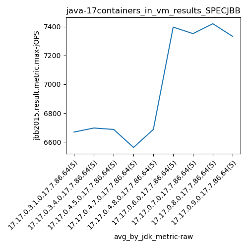
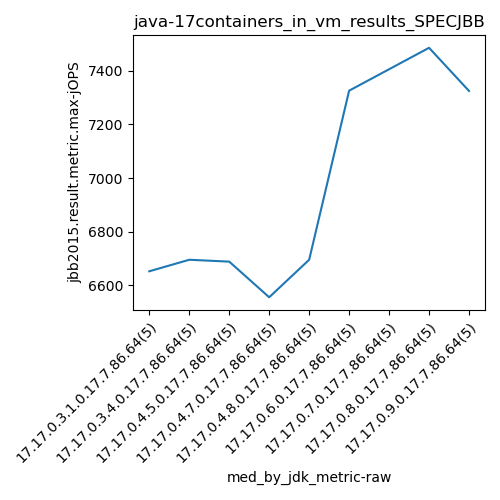
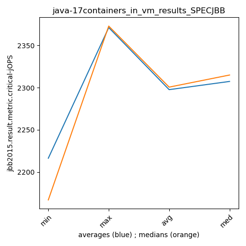

java-17 SPECJBB
Context at bottom
/home/jvanek/git/benchmarks-in-nested-virtualisation-toolchain/final_results/containers_in_vm_results/containers_in_vm_results_JMH
java-17
SPECJBB
/home/jvanek/git/benchmarks-in-nested-virtualisation-toolchain/final_results/containers_in_vm_results/containers_in_vm_results_J2DBENCH
java-17
SPECJBB
/home/jvanek/git/benchmarks-in-nested-virtualisation-toolchain/final_results/containers_in_vm_results/containers_in_vm_results_RADARGUNs3
java-17
SPECJBB
/home/jvanek/git/benchmarks-in-nested-virtualisation-toolchain/final_results/containers_in_vm_results/containers_in_vm_results_SPECJBB
java-17
SPECJBB
containers_in_vm_results_SPECJBB
- containers_in_vm_results_SPECJBB - max-jops
- containers_in_vm_results_SPECJBB - critical jops
containers_in_vm_results_SPECJBB - max-jops
Expected number of java-17 JDKs: 9
1st avgmed_alljdks_metric:
/home/jvanek/git/benchmarks-in-nested-virtualisation-toolchain/final_results/result_processing.py /home/jvanek/git/benchmarks-in-nested-virtualisation-toolchain/final_results/containers_in_vm_results/containers_in_vm_results_SPECJBB jbb2015.result.metric.max-jOPS False
values: [6652, 6613, 6637, 6762, 6681, 6555, 6695, 6778, 6762, 6695, 6688, 6844, 6748, 6601, 6555, 6520, 6652, 6555, 6555, 6530, 6520, 6695, 6695, 6748, 6778, 7519, 7326, 7486, 7326, 7325, 7164, 7406, 7423, 7439, 7325, 7712, 7519, 7486, 7109, 7274, 7164, 7519, 7325, 7230, 7423]

Expected number of iterations: 5
final number of values: 45 out of 45
Pass rate: 100.0%
values: (6520, 7712, 6978.0888888888885, 6778)

** accuracy from all jdks and runs
more is better
MIN: 6520
MAX: 7712
AVG: 6978.0888888888885
MED: 6778
Relative differences 1:
MIN-MAX: 15.0 %
MIN-AVG: 7.0 %
MIN-MED: 4.0 %
MAX-MIN: -18.0 %
MAX-AVG: -11.0 %
MAX-MED: -14.0 %
AVG-MED: -3.0 %
stored to java-17.properties. sort | uniq that!
2nd avgmed_by_jdk_metric:
values: [6669.0, 6697.0, 6687.2, 6562.4, 6687.2, 7396.4, 7351.4, 7420.0, 7332.2]

values: [6652, 6695, 6688, 6555, 6695, 7326, 7406, 7486, 7325]

values: (6562.4, 7420.0, 6978.0888888888885, 6697.0)
values: (6555, 7486, 6980.888888888889, 6695)

** accuracy from all jdks where runs were avged
more is better
MIN: 6562.4
MAX: 7420.0
AVG: 6978.0888888888885
MED: 6697.0
Relative differences 1:
MIN-MAX: 12.0 %
MIN-AVG: 6.0 %
MIN-MED: 2.0 %
MAX-MIN: -13.0 %
MAX-AVG: -6.0 %
MAX-MED: -11.0 %
AVG-MED: -4.0 %
stored to java-17.properties. sort | uniq that!
** accuracy from all jdks where runs were medianed
more is better
MIN: 6555
MAX: 7486
AVG: 6980.888888888889
MED: 6695
Relative differences 1:
MIN-MAX: 12.0 %
MIN-AVG: 6.0 %
MIN-MED: 2.0 %
MAX-MIN: -14.0 %
MAX-AVG: -7.0 %
MAX-MED: -12.0 %
AVG-MED: -4.0 %
stored to java-17.properties. sort | uniq that!
containers_in_vm_results_SPECJBB - critical jops
Expected number of java-17 JDKs: 9
1st avgmed_alljdks_metric:
/home/jvanek/git/benchmarks-in-nested-virtualisation-toolchain/final_results/result_processing.py /home/jvanek/git/benchmarks-in-nested-virtualisation-toolchain/final_results/containers_in_vm_results/containers_in_vm_results_SPECJBB jbb2015.result.metric.critical-jOPS False
values: [2186, 2347, 2322, 2411, 2370, 2190, 2341, 2362, 2398, 2423, 2346, 2389, 2366, 2347, 2408, 2287, 2197, 2077, 2413, 2319, 2382, 2389, 2373, 2306, 2316, 2153, 2167, 2334, 2080, 2377, 2360, 2366, 2236, 2260, 2315, 2311, 2180, 2300, 2337, 2272, 2306, 2180, 2301, 2189, 2106]

Expected number of iterations: 5
final number of values: 45 out of 45
Pass rate: 100.0%
values: (2077, 2423, 2297.6666666666665, 2319)

** accuracy from all jdks and runs
more is better
MIN: 2077
MAX: 2423
AVG: 2297.6666666666665
MED: 2319
Relative differences 1:
MIN-MAX: 14.0 %
MIN-AVG: 10.0 %
MIN-MED: 10.0 %
MAX-MIN: -17.0 %
MAX-AVG: -5.0 %
MAX-MED: -4.0 %
AVG-MED: 1.0 %
stored to java-17.properties. sort | uniq that!
2nd avgmed_by_jdk_metric:
values: [2327.2, 2342.8, 2371.2, 2258.6, 2353.2, 2222.2, 2307.4, 2280.0, 2216.4]

values: [2347, 2362, 2366, 2287, 2373, 2167, 2315, 2300, 2189]

values: (2216.4, 2371.2, 2297.6666666666665, 2307.4)
values: (2167, 2373, 2300.6666666666665, 2315)

** accuracy from all jdks where runs were avged
more is better
MIN: 2216.4
MAX: 2371.2
AVG: 2297.6666666666665
MED: 2307.4
Relative differences 1:
MIN-MAX: 7.0 %
MIN-AVG: 4.0 %
MIN-MED: 4.0 %
MAX-MIN: -7.0 %
MAX-AVG: -3.0 %
MAX-MED: -3.0 %
AVG-MED: 0.0 %
stored to java-17.properties. sort | uniq that!
** accuracy from all jdks where runs were medianed
more is better
MIN: 2167
MAX: 2373
AVG: 2300.6666666666665
MED: 2315
Relative differences 1:
MIN-MAX: 9.0 %
MIN-AVG: 6.0 %
MIN-MED: 6.0 %
MAX-MIN: -10.0 %
MAX-AVG: -3.0 %
MAX-MED: -3.0 %
AVG-MED: 1.0 %
stored to java-17.properties. sort | uniq that!
/home/jvanek/git/benchmarks-in-nested-virtualisation-toolchain/final_results/containers_in_vm_results/containers_in_vm_results_RADARGUNs1
java-17
SPECJBB
/home/jvanek/git/benchmarks-in-nested-virtualisation-toolchain/final_results/containers_in_vm_results/containers_in_vm_results_DACAPO
java-17
SPECJBB
pass rates:
containers_in_vm_results_SPECJBB=100.0%
Context:
- containers_in_vm_results
- SPECJBB